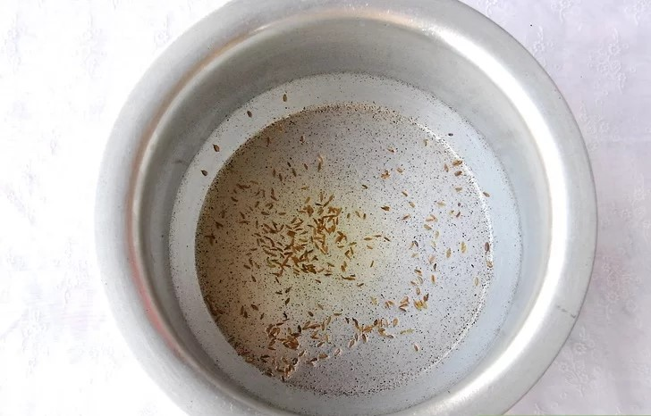

PART 1 - Making the Dough
-
Sieve the flour and salt together in a bowl. You can add a little more or less salt to taste if you desire.
-
Add the ghee or oil. Mix it in with your fingers, working with a handful of flour at a time. Keep mixing until all of the flour is coated with fat and a dough has begun to form. It should still be quite dry and flaky.
-
Mix in 5 tablespoons of water. Use your finger to work the water into the dough to loosen it up. The consistency should be soft and pliable, but not wet. Add more water if necessary.
-
Turn out the dough and knead it. Put the dough on a clean surface and knead it with your hands for about 4 minutes, until it is smooth and slightly shiny. Form it into the shape of a ball.
-
Allow the dough to rest for 30 minutes. Cover it with plastic wrap. Let it rest on the counter while you make the filling.[3] This will help the dough achieve a better texture.
PART 2 - Making the Filling
-
Heat the ghee in a large saucepan. Place it over medium high heat and allow the ghee to get hot.
-
Toast the cumin seeds. Toasting the seeds brings out the best in their flavor and scent. Toast them until the room becomes fragrant and the seeds start to crackle, about 30 seconds.
 -
Add the onion and ginger. Sauté them with the seeds for about five minutes, until the onion becomes translucent.
-
Add the garlic, chili peppers, turmeric, salt, and garam masala. Sauté the spices and fold them into the mixture for one minute.

-
Add the potatoes and peas. Stir the mixture gently and cook until the potatoes become dry, which should take about 3 minutes. Mix well and mash lightly.
-
Cool the filling. Remove it from heat and allow it to cool while you prepare the chapatti for filling.
-
Divide the dough into eight equal portions. You can use a measuring cup, but it's easier to just eyeball it.
-
Roll in each round into chapattis. A chapatti is a thin, flat circular bread or dough. In this case, each one should be about 6 inches (15.2 cm) in diameter. Use a rolling pin or press the chapattis into shape with your fingers.
-
Cut each chapatti into two halves. Use a knife to slice each one in half.
-
Stuff and fold the samosas. Spoon 2 teaspoons of filling into the center of a piece of dough, then bring the edges together to form a cone shape. Seal the edges carefully using a little water. (You can also make paste using flour and water for easier sealing).
- Use your fingers to press the edges of each samosa into place.
- For a lovelier edge, you can use a fork to press the edges together.
-
Repeat with the remaining chapattis and filling. As you finish filling each one, set it aside on a plate or a baking sheet.
-
Heat the oil. Pour several inches of oil into a large dutch oven or a high-sided frying pan. Heat the oil until it reaches 350 °F (177 °C). Use a candy thermometer to test whether the oil is hot, or place a small piece of dough in the oil to see if it sizzles.
-
Fry the samosas. Place 3 to 4 samosas in the pot to fry. Deep fry them for about 10 minutes, until both sides are golden brown. Don't try to crowd the pot with too many at once, or they may fall apart instead of cooking properly.
- After each batch is finished frying, use a slotted spoon to move the finished samosas to a plate lined with paper towels to drain off the extra oil.
- Take care not to let them fry for too long, or the dough will become tough.
-
Serve hot with green chutney. Hot crispy samosas are ready to eat with chutney.